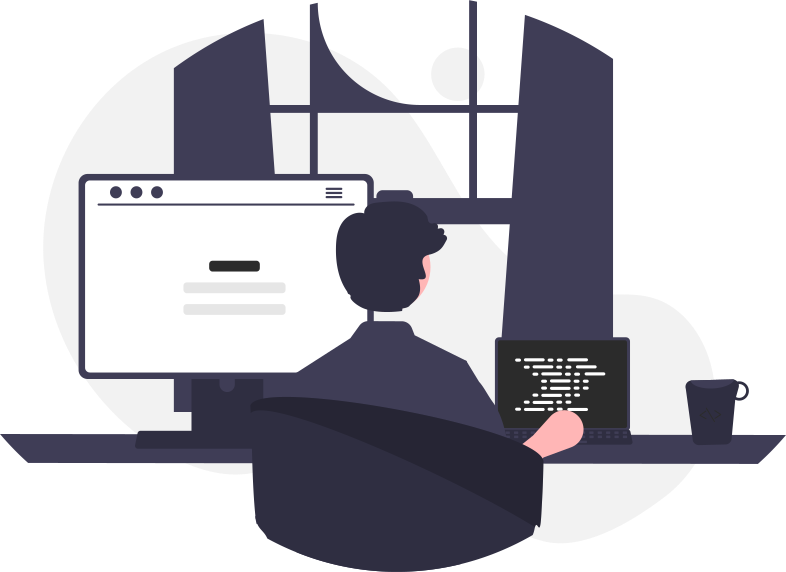

Marcin Kaczmarek
|
Marcin Kaczmarek
|
O mnie
Jestem Marcin i mam 19 lat.
Pierwszą stronę napisałem w technikum, ale błache szkolne projekty szybko się znudziły i sam zacząłem
tworzyć rozbudowane projekty.
Poczułem się spełniony, gdy wdrożyłem większy projekt na pierwszą własną domenę, która nazywa się własnie nexonstudio.pl.
Po tegorocznej maturze chciałbym
rozpocząć staż, który pozwoli mi zdobyć
doświadczenie w branży tworzenia stron
i aplikacji. Aktualnie
stawiam na samorozwój i naukę
frameworków (React). Nie są mi obce
podstawowe narzędzia i języki przy
pracy jako Web Developer a językiem
angielskim posługuję się na poziomie B2. Odbyłem również praktyki na których pracowałem z systemem
Liferay.
Uważam, że najważniejsze w tworzeniu stron jest zaciekawienie i przykucie uwagi użytkownika. Sam
zawsze szukam na stronach czegoś co się rusza.
Projekty
Kontakt
+48 796 970 474